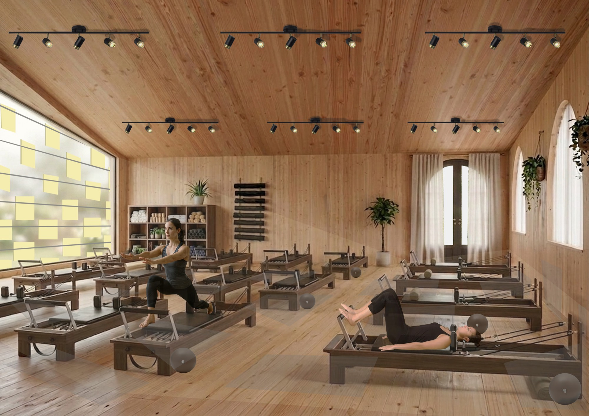
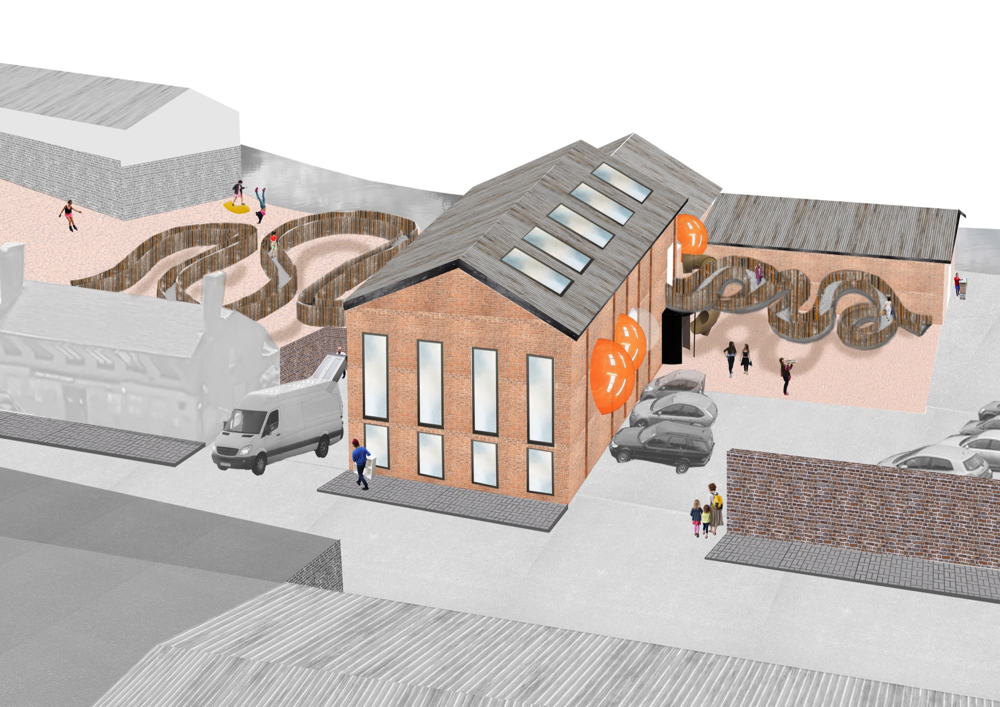
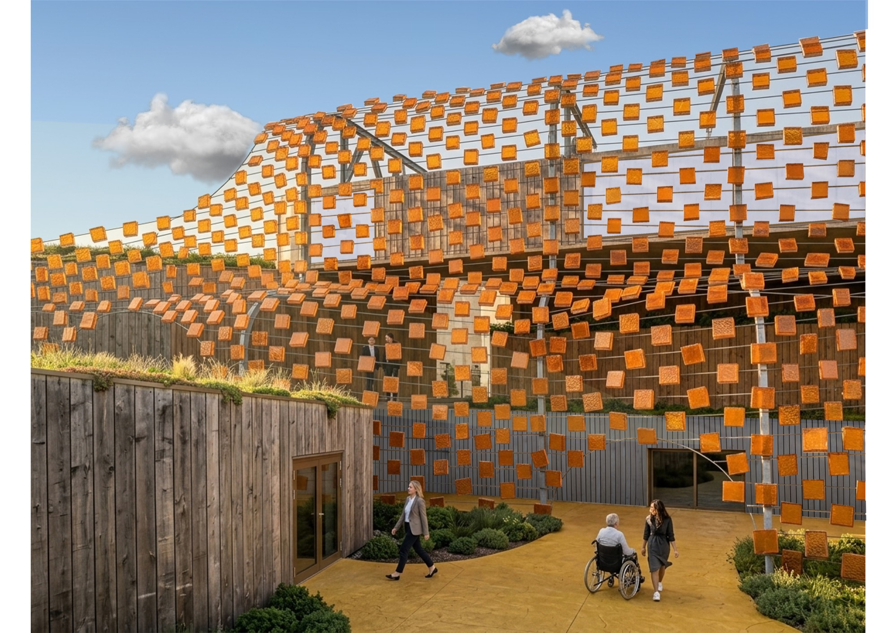
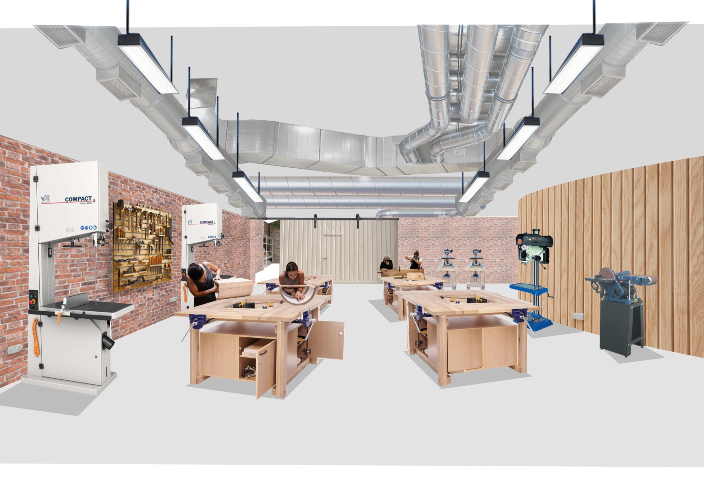
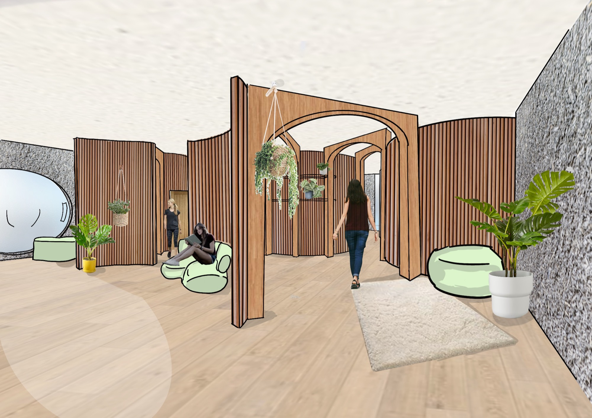
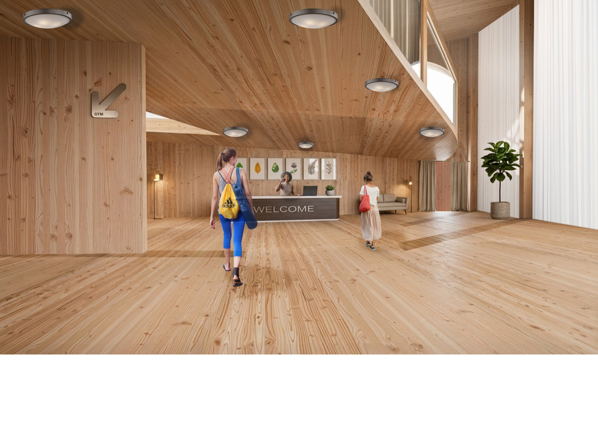
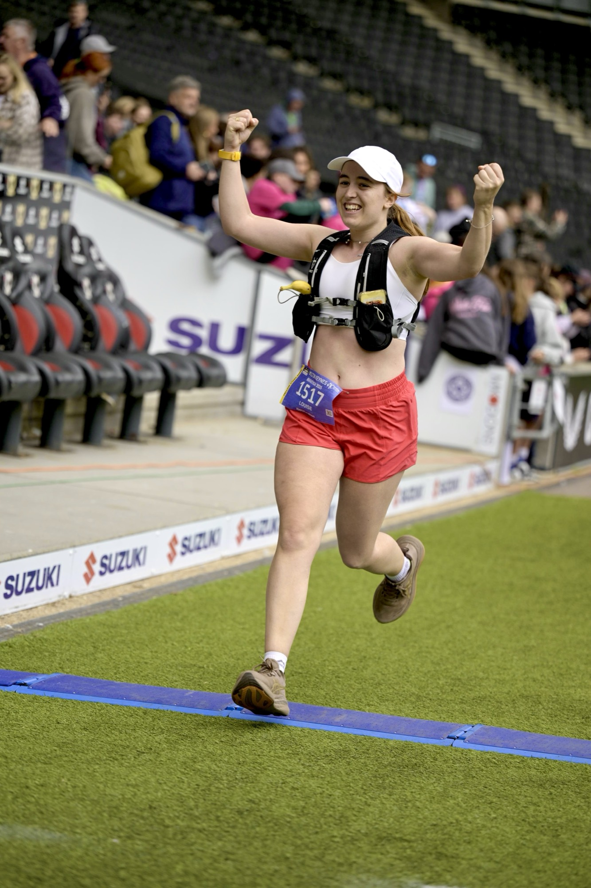

Architecture exploring feminist design, biophilic spaces and wellbeing — a graduate portfolio from the Manchester School of Architecture.
Click a project to skip to:

A skills workshop and community space designed for neurodiverse women, built sustainably without plastic alongside Manchester's canal network.

An accessible leisure centre for women on the SARC waitlist, using biophilic design and low-impact mindful sport to support recovery.
"The Maternity Ward is Designed for Men"
A critical investigation tracing the design history of the maternity ward from its 17th-century male origins to the present day.
Manchester — 2023–24
Rooted in feminist design theory, this project responds to the needs of neurodiverse women — creating a space that balances sensory stimulation with moments of quiet relief. Inspired by a local carpenter who traded rent for maintenance skills, the programme centres on workshops that teach women new trades in a field that remains predominantly male.
The building was designed to be constructed by women, with no plastic used in the build. Algae harvested from the nearby canal is repurposed as a bio-plastic alternative, closing a material loop between the site and its ecosystem.


Manchester — 2025–26
This project tackles two interlocking crises: the unaffordability of mainstream sport and the year-long wait women face before receiving SARC (Sexual Assault Referral Centre) counselling. The proposal is a redefined leisure centre — accessible, calm, and restorative — for women navigating that wait.
The programme focuses on low-impact, mindful movement: yoga, Pilates, and gentle exercise. Biophilic principles thread nature through every space via living materials, natural light, and softened form. Three values drove every design decision: movement, privacy, and play.

Manchester School of Architecture — 2025
"The Maternity Ward is Designed for Men"
When considering equality in spatial design, compromise is often unavoidable. Yet the maternity ward stands apart — it is, by definition, a space designed for women to give birth. This dissertation investigates who the maternity ward is actually designed for today, tracing a direct line back to the 17th century when the space was first conceived and controlled by men.
The research aims to close a critical gap in the literature on maternity ward design and make the case for genuinely gender-specific space-making in healthcare environments.

I'm a soon-to-be MArch graduate from the Manchester School of Architecture. Throughout my studies I've evolved from biophilic design into feminist spaces, finding a passion for healthcare and wellbeing environments that address real inequalities. I'm looking to continue as a Part 2 architectural assistant and eventually qualify fully — bringing sustainable, nature-led design to spaces that genuinely matter.
Alongside my studies I lead the social media team at The Egalitarian — a community raising awareness of inequality through an intersectional feminist lens — and I'm a scout leader, trustee, and outdoor activity instructor. I'm also a marathon runner with more races planned.
Get in touch to discuss commissions, collaborations or consultations.